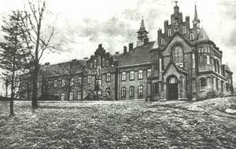

Osiedlenie się Sióstr w Jaśle.
Po opuszczeniu Wersalu w październiku 1901 roku, Siostry Wizytki zatrzymały się w Cieklinie. Przez dwa lata mieszkały w dworku należącym wówczas do SS. Norbertanek z Krakowa. Urządziły w nim kaplicę z Najświętszym Sakramentem. Siostry włączyły się w życie parafii służąc miejscowej ludności. Katechizowały dzieci, uczyły dziewczęta szycia, kroju, haftu, trykotarstwa. Zainteresowanym dawały lekcje rysunków, języka francuskiego i gry na fortepianie. Dzieliły się z chorymi lekami, robiły przychodzącym opatrunki, obdarowywały ubogich otrzymaną odzieżą. Mieszkańcy Cieklina byli Siostrom za tę pomoc bardzo wdzięczni. Dworek, który zamieszkiwały nasze Siostry stoi do dziś, pięknie odremontowany, a pamięć o jego mieszkankach w latach 1901 - 1903 przekazywana jest z pokolenia na pokolenie. Zaowocowało to kilkoma powołaniami do naszego Klasztoru. Obecny ks. proboszcz w Cieklinie ks. Franciszek Motyka. Pragnąc przypomnieć ten dwuletni pobyt Sióstr Wizytek w parafii Cieklin i włączyć się w ten sposób w obchody jubileuszowe Klasztoru na Górce przygotował uroczystość parafialną, która odbyła się 23 marca 2003 roku. Uroczystą Sumę, poprzedził przygotowany przez młodzież montaż słowno - muzyczny nt. historii zgromadzenia jasielskiego.
14 czerwca 1902 r. ks. Kanclerz Wiejowski z Przemyśla położył kamień węgielny pod budowę klasztoru w Jaśle. Projekt według St. Majerskiego przedstawiał duży obrys klasztoru z zamkniętym, kwadratowym wirydarzem, dwa skrzydła pensjonatu, kościół i około kilometrowy obwód muru klauzurowego. Budowa powoli postępowała. 17 maja 1903r. Ks. Bp. Pelczar poświęcił kamień węgielny pod budowę kościoła. Gdy jedno skrzydło klasztoru zostało na tyle wykończone, że siostry mogły w nim zamieszkać rozpoczęła się przeprowadzka z Cieklina do Jasła. 17 października 1903r. Siostry Wizytki zamieszkały na Górce.
Nadal trwała budowa. Rok później, 13 października 1904r. odbyła się uroczystość poświęcenia kościoła, którego wnętrze było jeszcze w surowym stanie. Na drugi dzień Ks. Bp. Józef Sebastian Pelczar ustanowił kanonicznie klauzurę papieską.
Przy tej okazji powiedział do księży: "Szczęśliwy jestem nie tylko dlatego, że siostry przyjąłem do swej diecezji, ale i do Swego serca". I rzeczywiście do końca życia dawał tego dowody troszcząc się po ojcowsku o sprawy duchowe i materialne Zgromadzenia.

Kościół i klasztor Stopniowo przyozdabiały nowe figury i obrazy. Na uwagę zasługują te, które przetrwały zawieruchę II wojny światowej. W 1907 roku z inicjatywy ks. kapelana Kwolka ustawiono figurę Matki Bożej na placu przed kościołem. Ze składek wiernych wykonano statuę z kamienia ciosowego, którą poświecono w święto Nawiedzenia Najśw. Maryi Panny. W 1945 r. figurę tę wydobyto spod gruzów, odnowiono i ponownie ustawiono na placu kościelnym. W 1909r. pani Hraboszky ofiarowała klasztorowi obraz Objawienia Najświętszego Serca Jezusa św. Małgorzacie Marii namalowany przez Maurycego Desmont. Obecnie znajduje się on w bocznym ołtarzu kościoła. W tym samym roku Siostry otrzymały wierną kopię obrazu Matki Bożej Ostrobramskiej. Na zmówienie Michała Piotrowicza, brata s. Józefy Ksawery, wykonał ją malarz Gobiata. Na widok Matki Miłosierdzia z oczu sióstr Wilnianek popłynęły łzy wzruszenia. Obraz ten od początku otoczony jest czcią sióstr i wiernych. W roku 1910 codzienne życie zgromadzenia jasielskiego płynęło już uregulowanym trybem. Życie modlitwy stało na mocnym fundamencie. Składało się na nie tylko to co określają obowiązujące przepisy, ale wzbogacane było w praktyki zwyczajowe i okolicznościowe oraz włączanie się w tradycyjne nabożeństwa paraliturgiczne w klasztornym kościele. Trudne przejścia zgromadzenia i brak oparcia o bazę materialną przypominały siostrom,
że cała ich egzystencja zawisła na Opatrzności. To wzmacniało ich wiarę, oddanie się i zawierzenie Bogu, a tym samym żarliwość modlitwy.